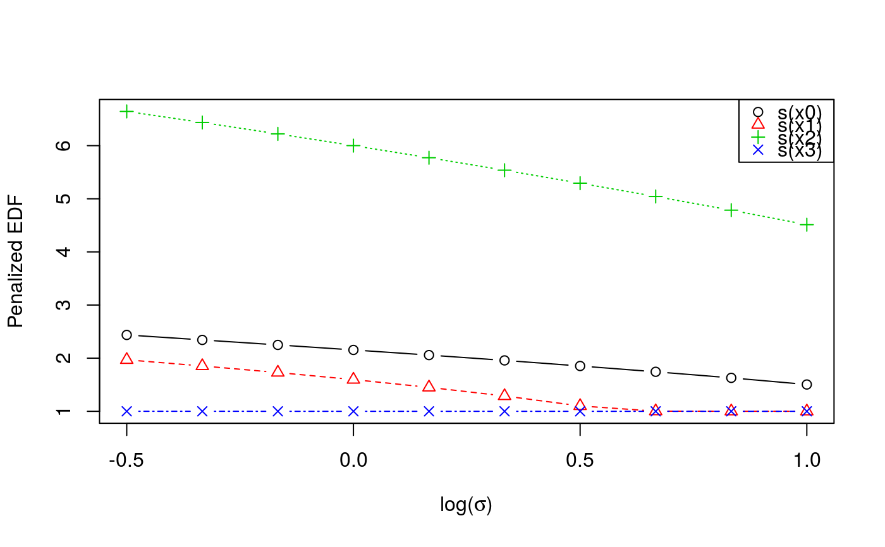

check.learn.RdProvides some visual plots showing how the calibration criterion and the effective degrees of freedom of each smooth component vary with the learning rate.
# S3 method for learn check(obj, sel = 1:2, ...)
| obj | the output of a call to |
|---|---|
| sel | this function produces two plots, set this parameter to 1 to plot only the first, to 2 to plot only the second or leave it to 1:2 to plot both. |
| ... | currently not used, here only for compatibility reasons. |
It produces several plots.
The first plot shows how the calibrations loss, which we are trying to minimize, varies with the
log learning rate. This function should look quite smooth, if it doesn't then try to increase
err or control$K (the number of bootstrap samples) in the original call to
tuneLearn. The second plot shows how the effective degrees of freedom of each smooth term
vary with log(sigma). Generally as log(sigma) increases the complexity of the fit decreases, hence
the slope is negative.
Fasiolo, M., Goude, Y., Nedellec, R. and Wood, S. N. (2017). Fast calibrated additive quantile regression. Available at https://arxiv.org/abs/1707.03307.
#> Gu & Wahba 4 term additive modelb <- tuneLearn(lsig = seq(-0.5, 1, length.out = 10), y~s(x0)+s(x1)+s(x2)+s(x3), data=dat, qu = 0.5) check(b)